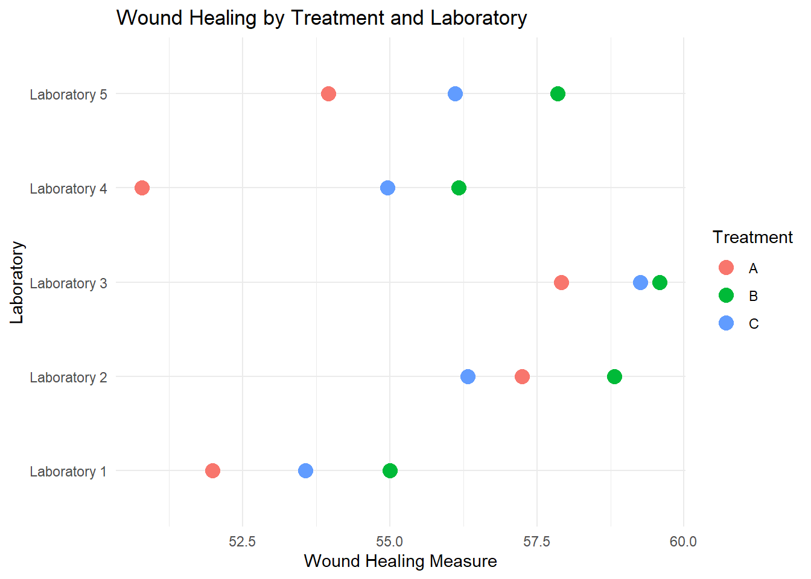
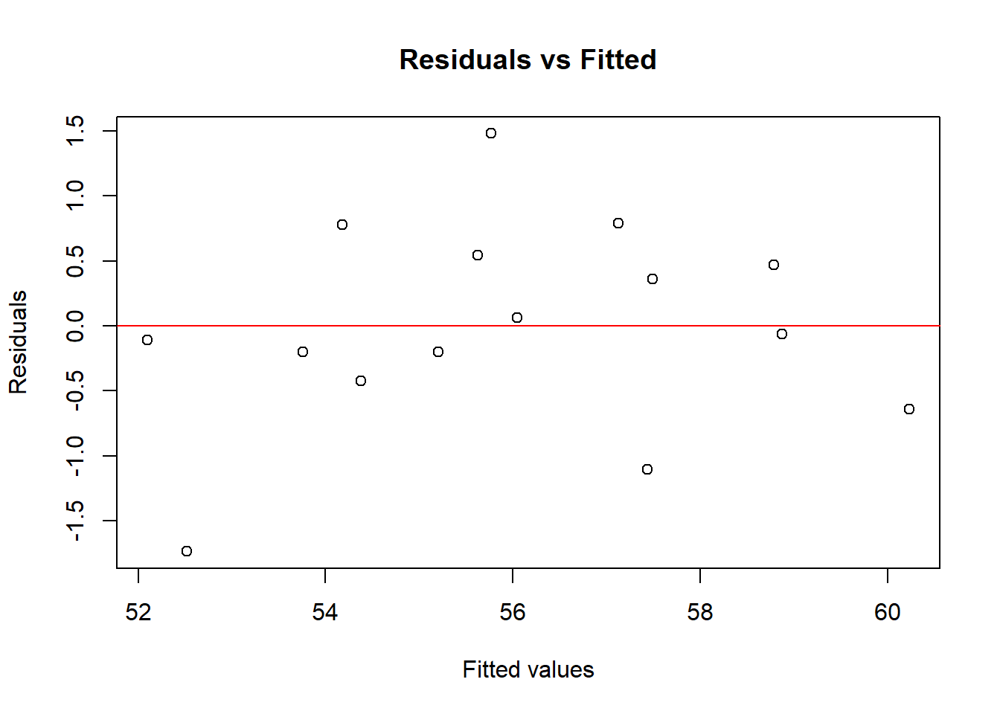
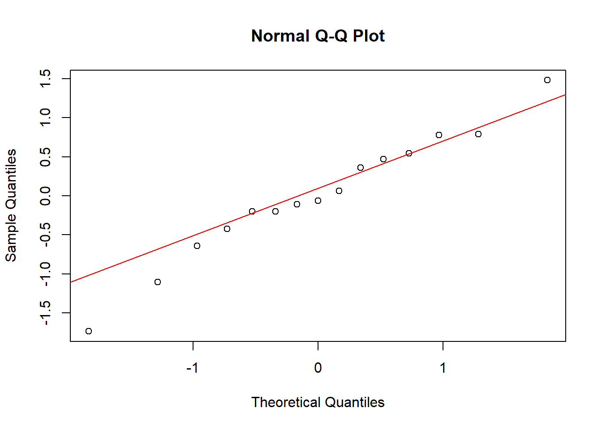

# Set seed for reproducibility
set.seed(456)
# Define blocks and treatments
blocks <- factor(paste0("Laboratory ", rep(1:5, each = 3))) # Labs 1 to 5
treatments <- factor(rep(c("A", "B", "C"), times = 5))
# Simulate data
block_effect <- rnorm(5, mean = 0, sd = 2) # Random effect for each block
treatment_effect <- c(A = 5, B = 7, C = 6) # Fixed effects for treatments
# Create data frame
data_block <- data.frame(
Laboratory = blocks,
Treatment = treatments,
WoundHealing = NA
)
# Assign responses
for (i in 1:nrow(data_block)) {
b <- as.numeric(data_block$Laboratory[i])
t <- data_block$Treatment[i]
data_block$WoundHealing[i] <-
50 + block_effect[b] + treatment_effect[t] + rnorm(1, mean = 0, sd = 1)
}Beyond Linear Regression Lab 3: Randomized Block Designs
Example: Testing Wound Healing Treatments Across Different Laboratory Facilities
Suppose we are conducting an experiment to compare the effectiveness of three different wound healing treatments (Treatment A, Treatment B, and Treatment C) on cell cultures. The experimental units are the cell culture plates. To account for potential variability in laboratory conditions (such as humidity and temperature), we use a randomized block design, with laboratory facility as the blocking factor. Within each laboratory (block), the three treatments are randomly assigned to one cell culture plate each, ensuring that every treatment is represented once within each block. This design helps control for variability between laboratory facilities, allowing us to more effectively isolate the treatment effects.
The R code chunk above simulates wound healing observations (measured on a continuous scale, where higher values indicate better healing) for 15 cell culture plates, divided across five laboratory facilities. The results are stored in the data frame data_block, which consists of the following three variables:
Laboratory: A factor variable indicating the laboratory facility.Treatmment: A factor variable indicating the applied treatment.WoundHealing: A numeric variable representing the degree of wound healing on a continuous scale.
Exploratory Data Analysis
To explore the data and investigate the possible presence of a laboratory effect, we start by creating a scatter plot with the wound healing variable on the x-axis and the laboratory facility variable on the y-axis:
library(ggplot2)
ggplot(data_block, aes(x = WoundHealing, y = Laboratory, color = Treatment)) +
geom_point(size = 4) +
labs(title = "Wound Healing by Treatment and Laboratory",
x = "Wound Healing Measure",
y = "Laboratory") +
theme_minimal()
In addition to the scatter plot, we compute descriptive statistics to summarize the wound healing measures within treatments and within laboratories. This will help us assess variability both across treatments and across laboratory facilities.
library(dplyr)
# Summarizing data by Treatment
summary_stats_treatment <- data_block %>%
group_by(Treatment) %>%
summarise(
Mean_WoundHealing = mean(WoundHealing),
SD_WoundHealing = sd(WoundHealing)
)
# Summarizing data by Laboratory
summary_stats_laboratory <- data_block %>%
group_by(Laboratory) %>%
summarise(
Mean_WoundHealing = mean(WoundHealing),
SD_WoundHealing = sd(WoundHealing)
)
# Displaying the produced summary tables
summary_stats_treatment# A tibble: 3 × 3
Treatment Mean_WoundHealing SD_WoundHealing
<fct> <dbl> <dbl>
1 A 54.4 3.15
2 B 57.5 1.89
3 C 56.0 2.11summary_stats_laboratory# A tibble: 5 × 3
Laboratory Mean_WoundHealing SD_WoundHealing
<fct> <dbl> <dbl>
1 Laboratory 1 53.5 1.51
2 Laboratory 2 57.5 1.26
3 Laboratory 3 58.9 0.888
4 Laboratory 4 54.0 2.83
5 Laboratory 5 56.0 1.95 A Mixed Effects Model for the Randomized Block Design
In a mixed-effects model, both fixed effects and random effects are used to account for different sources of variation.
In the wound healing example, it is essential to account for the laboratory facility because differences between laboratories (such as variations in environmental conditions) could influence the outcome. By including laboratory as a blocking variable, we can more efficiently estimate the treatment effects by controlling for this source of variability. This can be statistically achieved by modeling laboratory as either a fixed effect or a random effect.
While we could model laboratory as a fixed effect, treating it as a random effect is preferred in this case for two reasons: first, it better reflects reality, as the laboratories are considered a random sample of possible laboratory conditions; second, it reduces the number of parameters we need to estimate, making the model more parsimonious. Modeling the lab as random allows us to account for variability between laboratories without estimating a separate effect for each one, which ultimately helps to isolate the treatment effects more effectively.
On the other hand, treatment is modeled as a fixed effect because we are specifically interested in estimating and comparing the effectiveness of the three particular wound healing treatments (Treatment A, Treatment B, and Treatment C). These treatments are not considered random samples from a larger population of treatments; rather, they are the specific interventions under study. By modeling treatment as a fixed effect, we aim to draw conclusions about the differences between these particular treatments, and their impact on wound healing.
Model Specification
The mixed-effects model for our randomized block design can be specified as:
\[ Y_{ij} = \mu + \tau_i + b_j + \epsilon_{ij} \]
where:
- \(Y_{ij}\): The observed wound healing response for treatment \(i\) in laboratory \(j\).
- \(\mu\): The overall mean response across all treatments and laboratories.
- \(\tau_i\): The fixed effect of treatment \(i\), representing the deviation of treatment \(i\) from the overall mean \(\mu\).
- \(b_j\): The random effect of laboratory \(j\), assumed to be normally distributed with mean zero and variance \(\sigma_b^2\)).
- \(\epsilon_{ij}\): The error term, assumed to be normally distributed with mean zero and variance \(\sigma^2\).
Model Estimation
We previously mentioned that the lme4 package does not provide p-values for the fixed effect estimates. One way around this is to fit the mixed effects model using the lmer() function from the lmeTest package, which extends to original lmer() function from the lme4 to include p-values for the fixed effect estimates. The lmerTest package achieves this by applying Satterthwaite’s approximation to calculate degrees of freedom, which are then used to derive the p-values.
library(lmerTest)
options(contrasts = c("contr.sum", "contr.poly")) # Effects coding
model_block <- lmer(WoundHealing ~ Treatment + (1 | Laboratory), data = data_block)
summary(model_block)Linear mixed model fit by REML. t-tests use Satterthwaite's method [
lmerModLmerTest]
Formula: WoundHealing ~ Treatment + (1 | Laboratory)
Data: data_block
REML criterion at convergence: 52.8
Scaled residuals:
Min 1Q Median 3Q Max
-1.66569 -0.29976 -0.05942 0.48477 1.41990
Random effects:
Groups Name Variance Std.Dev.
Laboratory (Intercept) 4.874 2.208
Residual 1.086 1.042
Number of obs: 15, groups: Laboratory, 5
Fixed effects:
Estimate Std. Error df t value Pr(>|t|)
(Intercept) 55.9693 1.0233 4.0000 54.692 6.69e-07 ***
Treatment1 -1.5908 0.3806 8.0000 -4.180 0.00308 **
Treatment2 1.5170 0.3806 8.0000 3.986 0.00403 **
---
Signif. codes: 0 '***' 0.001 '**' 0.01 '*' 0.05 '.' 0.1 ' ' 1
Correlation of Fixed Effects:
(Intr) Trtmn1
Treatment1 0.000
Treatment2 0.000 -0.500Syntax overview
Let’s break down the model formula WoundHealing ~ Treatment + (1 | Laboratory)
WoundHealing ~ Treatment: This specifies thatWoundHealingis the outcome variable and thatTreatmentis included as a fixed effect to estimate differences between the three treatments. Note that the intercept is included by default in the model, soWoundHealing ~ Treatmentis essentially a shortcut forWoundHealing ~ 1 + Treatment. Also remember that with effects coding, the intercept represents the overall mean across all levels of the treatment variable, and the treatment coefficients represent deviations from this mean.(1 | Laboratory): This specifies the random effect forLaboratory, representing laboratory-specific deviations from the overall mean.
Summary overview
When you run summary(model_block), the output will display:
- Fixed Effects: Estimates of the fixed effects
- Intercept: The overall mean wound healing score averaged across all treatments and laboratories.
- Treatment: The differences in wound healing associated with each treatment relative to the overall mean.
- Random Effects: Estimates of the variance components
- Laboratory - Intercept: Between-laboratory variability (\(\sigma^2_{b}\)).
- Residual: Residual variance (\(\sigma^2\)).
Caution: Interpreting p-values in Mixed Effects Models
While the lmerTest package provides p-values for fixed effects, it is important to use them with caution, primarily because methods for calculating degrees of freedom, such as Satterthwaite, are approximations that may not always be reliable, particularly in complex models fitted to imbalanced data. Generally, this sensitivity is not a concern for the randomized block design considered in this lab.
Assessing the variance components
Assessing the fixed effects
In addition to providing p-values for the fixed effects estimates, the lmerTest package also implements the anova() function to test the overall significance of fixed effects in the model. Additionally, the ls_means() function can be used to calculate the estimated marginal means for the factors (i.e., variables that are defined as factors in the data frame or the model formula) included in the fixed effects structure of the model. Alternatively, these estimated marginal means can be calculated using the emmeans() function from the emmeans package, which provides more options and greater flexibility for advanced users.
# Obtain ANOVA table for the fixed effects
anova(model_block)Type III Analysis of Variance Table with Satterthwaite's method
Sum Sq Mean Sq NumDF DenDF F value Pr(>F)
Treatment 24.187 12.093 2 8 11.132 0.004883 **
---
Signif. codes: 0 '***' 0.001 '**' 0.01 '*' 0.05 '.' 0.1 ' ' 1# Calculate estimated marginal means for the Treatment variable
ls_means(model_block)Least Squares Means table:
Estimate Std. Error df t value lower upper Pr(>|t|)
TreatmentA 54.3786 1.0918 5.1 49.805 51.5938 57.1633 4.302e-08 ***
TreatmentB 57.4864 1.0918 5.1 52.651 54.7016 60.2711 3.236e-08 ***
TreatmentC 56.0430 1.0918 5.1 51.329 53.2583 58.8278 3.686e-08 ***
---
Signif. codes: 0 '***' 0.001 '**' 0.01 '*' 0.05 '.' 0.1 ' ' 1
Confidence level: 95%
Degrees of freedom method: Satterthwaite Pairwise comparisons
Since we found a significant treatment effect, we proceed with computing pairwise differences of the estimated marginal means. This can be achieved by adding the argument pairwise=TRUE to the call to the ls_means() function. Unlike the emmmeans package, there is no multiplicity correction for pairwise comparisons in the lmerTest package. We therefore use the p.adjust() function from the base R stats package to compute the Bonferroni corrected p-values (i.e., the original p-values multiplied by the number of comparisons).
# Compute pairwise differences of the estimated marginal means
emms <- ls_means(model_block, pairwise=TRUE)
emmsLeast Squares Means table:
Estimate Std. Error df t value lower upper
TreatmentA - TreatmentB -3.107786 0.659209 8 -4.7144 -4.627924 -1.587647
TreatmentA - TreatmentC -1.664484 0.659209 8 -2.5250 -3.184623 -0.144345
TreatmentB - TreatmentC 1.443302 0.659209 8 2.1894 -0.076837 2.963441
Pr(>|t|)
TreatmentA - TreatmentB 0.001513 **
TreatmentA - TreatmentC 0.035533 *
TreatmentB - TreatmentC 0.059973 .
---
Signif. codes: 0 '***' 0.001 '**' 0.01 '*' 0.05 '.' 0.1 ' ' 1
Confidence level: 95%
Degrees of freedom method: Satterthwaite # Retrieve the p-values from the emms object and adjust them
# for multiple testing using the Bonferroni correction
p.adjust(emms$`Pr(>|t|)`, method="bonferroni")[1] 0.004539079 0.106597860 0.179918675Model Diagnostics
Similar as in the previous lab, we will inspect the conditional residuals to check the model assumptions regarding the error term:
# Extract conditional residuals
residuals_cond <- resid(model_block)
# Residuals vs Fitted
plot(fitted(model_block), residuals_cond,
main = "Residuals vs Fitted",
xlab = "Fitted values",
ylab = "Residuals")
abline(h = 0, col = "red")
# Normal Q-Q Plot
qqnorm(residuals_cond)
qqline(residuals_cond, col = "red")
Reporting
A linear mixed-effects model was fitted to assess the effect of treatment on wound healing, with laboratory included as a random effect to account for variability across different laboratory settings. The treatment effect was statistically significant [F(2, 8) = 11.13, p = 0.0045], indicating differences among the treatments. Estimated marginal means analysis revealed that Treatment B had the highest wound healing score (M = 57.5, 95% CI = [54.7, 60.3]), significantly higher than Treatment A (M = 54.4, 95% CI = [51.6, 57.2], p = 0.0045). However, no significant differences were found between Treatment A and Treatment C (M = 56.0, 95% CI = [53.3, 58.8], p = 0.1066), nor between Treatment B and Treatment C (p = 0.1799). Degrees of freedom were calculated using Satterthwaite’s approximation. P-values were adjusted using the Bonferroni correction.